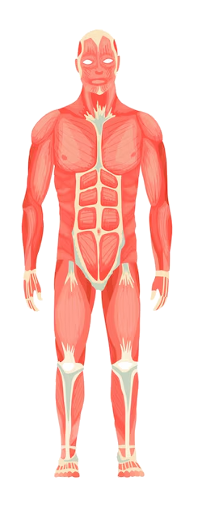

Noticia relevante 1
Video explicativo sobre la importancia de la prevención en salud pública.

Leavell & Clark, citados en The concept of health and the difference between prevention and promotion
To prevent means 'to forestall or thwart by previous or precautionary measures; … stop from happening' … Prevention in health … 'calls for action in advance, based on knowledge of natural history in order to make it improbable that the disease will progress subsequently'.

Video explicativo sobre la importancia de la prevención en salud pública.
Cardiólogo comparte las claves para mantener un CORAZÓN y una VIDA saludables
Doctors respond after Trump announcement about Tylenol and autism
Inside Afghanistan's maternity health crisis after US aid cuts | BBC News